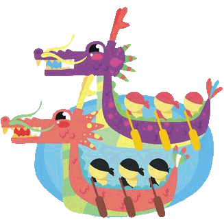

About: The Dragon Boat Festival (Duan Wu) commemorates Qi Zhu, a loyal official in the Song Dynasty. On this day, people hold water races on dragon boats, eat zongzi, and wear incense bags to ward off poor health.
Date: 5th date of the fifth month

Lore
Once upon a time in China during a certain dynasty, there was a royal court official named Qu Yuan. He loved his country dearly and was a righteous official. However, the Emperor he served was foolish and corrupt. Time and time again Qu Yuan counseled the Emperor to do right, but the Emperor refused to listen. As a result, the country was in a perilous state, teetering on the edge of war with neighboring nations who were much more powerful.
Distraught by the gloomy state of affairs, feeling helpless, and unwilling to see his beloved country head to destruction, Qu Yuan committed suicide by throwing himself into the river.
The people heard of his deed and hurried to the river. Knowing that he is a righteous official, they tried to save him. The people got on boats, racing up and down the river searching for Qu Yuan. But alas, it was too late. Unable to find him, the people wrapped balls of rice in bamboo leaves and flung them into the river, so that the fishes would eat the rice instead of his body. And thus, the food zhongzi was invented.
Traditions
For the Dragon Boat Festival, people hold boat races in long rowboats. The bow of the boat is shaped like a dragon head and the entire boat is painted to look like a Chinese dragon. At the helm of the dragon boat sits a drummer who yells encouragments as she or he sits facing the team, while the rest of the team arduously row to the beat of the drum in an attempt to win the race, as people on shore either cheer or watch leisurely.
Another tradition on this holiday is for children to wear incense bags around their necks. The incense bags are believed to ward off evil spirits. They are often cutely decorated colorful pouches that usually are shaped like animals.
Food
Zhongzi The most common food on Lantern Festival is the zhongzi, which are triangular-shaped rolls of rice wrapped in bamboo leaves tied with strings. They can be sweet or salty, with red bean paste filling in the sweet ones; and meat, egg yolks, and mushrooms in the salty ones. Northern and Southern China have different styles of wrapping the zhongzi.